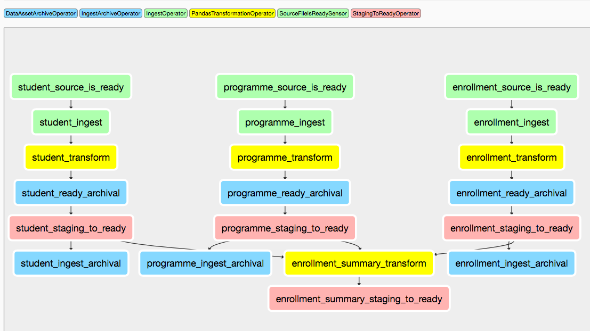

Tutorial: loading the university data model¶
In the following section we will show a toy example, on how a very simple DAG using Airtunnel can be built.
If you want to run this tutorial, it is on GitHub as a demo project.
Objective of the DAG workflow¶
For the ingested data assets, the example DAG will:
sense for input data for a Data Asset in the form of csv, using a glob pattern
move the input file(s) to a staging location
prepare a new version of the Data Asset by applying the specified transformations, which are deduplication and renames
store the new version on a staging location
atomically load the new data into the physical data store
archive the previous version of the data asset, using the DAG’s execution date
update Airtunnel’s load status, file ingestion and lineage metadata
archive the ingested files using the DAG’s execution date
Subsequently, it will update the derived data asset.
Data Assets¶
The four relevant data assets for the university toy example are: Student, Programme, Enrollment and Enrollment Summary.
Student, Programme and Enrollment are ingested assets we receive as a flat file csv, “Enrollment summary” is a derived asset we can build by joining them together and then counting per student major subject and program, how many students are enrolled.
We start by declaring the three ingested data assets. The first one is
student, therefore let’s place a student.yaml in the declaration
store with the following contents:
type: ingested
ingest:
in_storage_format: csv
file_input_glob: student*
archive_ingest: yes
transformation:
in_column_renames:
student_name: student_first_name
load:
out_storage_format: parquet
key_columns:
- student_id
out_compression_codec: gzip
archive_ready: yes
👍Great! This is a very readable description of important parameters,
that influence how we process this data asset. Actually, we can leverage
some of the defaults and can be less explicit when we describe
programme (in its own programme.yaml):
type: ingested
ingest:
file_input_glob: programme*
load:
key_columns:
- programme_id
…and enrollment (in its own enrollment.yaml):
type: ingested
ingest:
file_input_glob: enrollment_*
load:
key_columns:
- student_id
- programme_id
Here we have specified some key-columns we want to later use for deduplication purposes.
The last data asset to describe is enrollment_summary, a derived
data asset with the following description:
type: derived
This description is super compact as we simply inherit all the defaults (parquet, gzip and archival) for loading.
Wonderful, this is it in terms of declarations and we are ready to go to write some Pandas scripts! 🚀
Data Asset scripts¶
To process data assets, we want to use Pandas. Hence, we will create four Python modules - one for each asset. All of these need to implement a method of the following signature:
from airtunnel import PandasDataAsset
def rebuild_for_store(asset: PandasDataAsset, airflow_context):
pass
Let’s start by specifying the script for the student asset,
student.py:
from airtunnel import PandasDataAsset, PandasDataAssetIO
def rebuild_for_store(asset: PandasDataAsset, airflow_context):
student_data = PandasDataAssetIO.read_data_asset(
asset=asset, source_files=asset.pickedup_files(airflow_context)
)
student_data = asset.rename_fields_as_declared(student_data)
PandasDataAssetIO.write_data_asset(asset=asset, data=student_data)
We can see, that we make use of the lightweight class
PandasDataAssetIO which helps to translate data asset declarations
around storage into Pandas commands. Similarly, column renames based
upon declarations are a one-liner delegated to the PandasDataAsset
implementation. Don’t worry - in case you need special properties, both
read_data_asset() and write_data_asset() optionally except
additional keyword arguments that will be passed to the Pandas function.
Or, just do not use PandasDataAssetIO at all - rebuild_for_store
can be implemented as you wish.
Mostly similar, the script programme.py looks like this:
from airtunnel import PandasDataAsset, PandasDataAssetIO
def rebuild_for_store(asset: PandasDataAsset, airflow_context):
programme_data = PandasDataAssetIO.read_data_asset(
asset=asset, source_files=asset.pickedup_files(airflow_context)
)
programme_data = programme_data.drop_duplicates(
subset=asset.declarations.key_columns
)
PandasDataAssetIO.write_data_asset(asset=asset, data=programme_data)
Here we can see, that the script makes use of the declared key-columns to de-duplicate the inputs.
The Python script enrollment.py looks like this:
from airtunnel import PandasDataAsset, PandasDataAssetIO
def rebuild_for_store(asset: PandasDataAsset, airflow_context):
enrollment_data = PandasDataAssetIO.read_data_asset(
asset=asset, source_files=asset.pickedup_files(airflow_context)
)
PandasDataAssetIO.write_data_asset(asset=asset, data=enrollment_data)
This is as straight forward as it gets, just reading in input data and writing it with the output format.
More interesting is the script enrollment_summary.py that performs
the aggregation:
import pandas as pd
from airtunnel import PandasDataAsset, PandasDataAssetIO
def rebuild_for_store(asset: PandasDataAsset, airflow_context):
student = PandasDataAsset(name="student")
programme = PandasDataAsset(name="programme")
enrollment = PandasDataAsset(name="enrollment")
student_df = student.retrieve_from_store(airflow_context, consuming_asset=asset)
programme_df = progr
The final DAG¶
Here comes the great part - assembling the scripts we prepared above into the final DAG. For this, we leverage the data assets with their declarations, in addition to several custom operators (introduced in detail below) that Airtunnel provides.
from datetime import datetime
from airflow.models import DAG
from airtunnel import PandasDataAsset
from airtunnel.operators.archival import DataAssetArchiveOperator, IngestArchiveOperator
from airtunnel.operators.ingestion import IngestOperator
from airtunnel.operators.loading import StagingToReadyOperator
from airtunnel.operators.transformation import PandasTransformationOperator
from airtunnel.sensors.ingestion import SourceFileIsReadySensor
student = PandasDataAsset("student")
programme = PandasDataAsset("programme")
enrollment = PandasDataAsset("enrollment")
enrollment_summary = PandasDataAsset("enrollment_summary")
with DAG(
dag_id="university",
schedule_interval=None,
start_date=datetime(year=2019, month=9, day=1),
) as dag:
ingested_ready_tasks = set()
# a common stream of tasks for all ingested assets:
for ingested_asset in (student, programme, enrollment):
source_is_ready = SourceFileIsReadySensor(asset=ingested_asset)
ingest = IngestOperator(asset=ingested_asset)
transform = PandasTransformationOperator(asset=ingested_asset)
archive = DataAssetArchiveOperator(asset=ingested_asset)
staging_to_ready = StagingToReadyOperator(asset=ingested_asset)
ingest_archival = IngestArchiveOperator(asset=ingested_asset)
dag >> source_is_ready >> ingest >> transform >> archive >> staging_to_ready >> ingest_archival
ingested_ready_tasks.add(staging_to_ready)
# upon having loaded the three ingested assets, connect the aggregation downstream to them:
build_enrollment_summary = PandasTransformationOperator(asset=enrollment_summary)
build_enrollment_summary.set_upstream(ingested_ready_tasks)
staging_to_ready = StagingToReadyOperator(asset=enrollment_summary)
dag >> build_enrollment_summary >> staging_to_ready
Look how clean this DAG is - it fully conveys what actually happens and with which dependencies.
Notice something special? Yes - we have never actually defined a
task_id with these custom Airtunnel operators. If we don’t,
Airtunnel will derive the operator task_ids from the given data asset’s
name. An easy way that yields consistent naming! 👍
Graphically the finished DAG looks like this:

What happened in the background?¶
The four assets have been rebuilt and loaded into the ready layer of
the physical data store: 
The ingested raw-data has been archived under the DAG execution date:

…as well as the previous versions of the data assets:  (note: we did not include an archival operator for
(note: we did not include an archival operator for
enrollment_summary in the university DAG)
Collected metadata¶
One of Airtunnel’s additional benefits is, that it extends Airflow’s metadata model with data on load status, ingested raw files and lineage.
To retrieve load status, simply do this:
from airtunnel import PandasDataAsset
from airtunnel.metadata.adapter import SQLMetaAdapter
student = PandasDataAsset("student")
adapter = SQLMetaAdapter()
load_status = adapter.read_load_status(student)
print(load_status)
student was loaded at 2019-09-28 18:43:29.306133, from DAG university (2019-09-28 16:38:26.880186) and task student_staging_to_ready
To retrieve ingested files metadata, simply do this:
print(
adapter.read_inspected_files(
for_asset=student,
dag_id=load_status.dag_id,
dag_exec_date=load_status.dag_exec_date,
)
)
student has source file: student.csv, of size: 181, created at: 2019-09-28 18:38:39, collected from: DAG: university (2019-09-28 16:38:26.880186) and task id student_ingest
Note, that we pass in the latest execution date that we just pulled from the asset’s load status!
To retrieve the lineage, simply do this:
enrollment_summary = PandasDataAsset("enrollment_summary")
print(adapter.read_lineage(for_target=enrollment_summary))
[(student,programme,enrollment) –> enrollment_summary (DAG: university [2019-09-28 16:38:26.880186], task: enrollment_summary_transform), 0)]
This gets all recursive known ancestors for enrollment_summary, grouped by DAG/task. The ‘0’ from this tuple indicates, that this lineage link is at the very first and only level.
Access to the individual metadata fields is possible through instance properties; not shown for brevity.